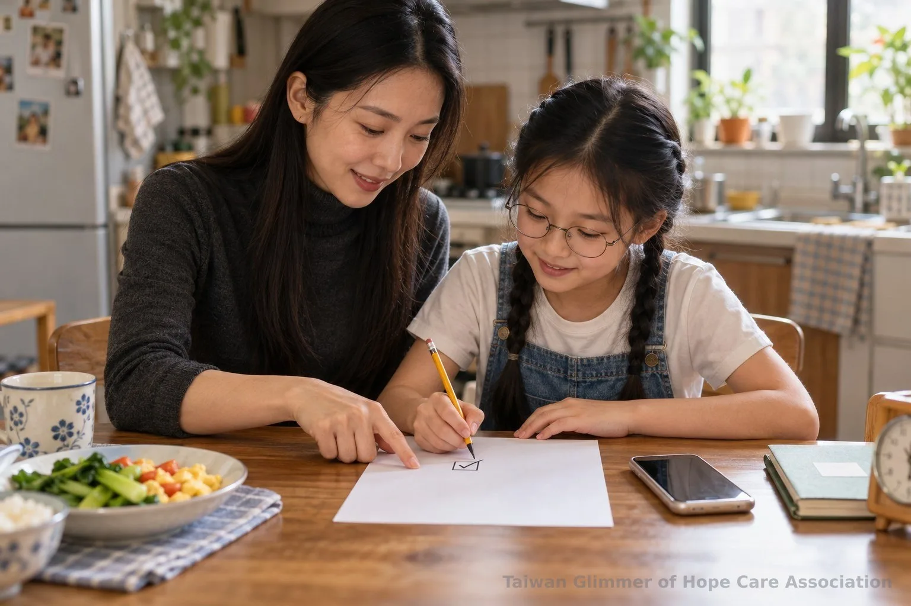
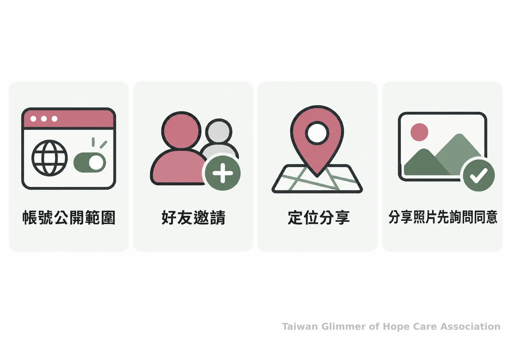

兒童手機首次使用，家庭數位約定怎麼訂？
第一支手機帶來聯絡與探索，也需要清楚的家庭數位約定。從使用時間、隱私、私訊、照片到求助方式，陪孩子建立遇事能開口的安全界線。
【微光專欄｜身體界線｜系列二之 4】
第一支手機不只是多了一種聯絡工具，也讓孩子接觸更多訊息、社群與陌生人的邀請。家長可以在交手機前，和孩子談好使用時間、隱私設定、照片分享，以及遇到不舒服的訊息要找誰。數位約定說得具體，孩子才知道可以怎麼做，也知道犯錯或受驚時仍能向大人求助。
一、手機使用規則要能放進日常
先談手機何時使用、哪些場合先收起，以及需要聯絡家人時如何處理。規則應由大人和孩子一起確認，留有因應突發情況的方式。
可以從一天裡固定會發生的時刻開始討論：用餐時手機放哪裡、睡前由誰提醒收起、上課時依學校規範如何保管。家長也可詢問孩子最想用手機做什麼，再說明界線背後的理由。只下命令，孩子較難理解規則如何保護自己；一起訂定並定期檢視，才有機會讓約定跟著生活調整。
家庭的作息、孩子的年齡、使用的平台與學校規範各有差異，手機約定不宜照抄別人的時數或清單。涉及家庭媒體約定與兒少網路安全的研究，也會受到研究對象年齡、情境及平台影響，不能直接當成每個家庭都適用的固定答案。大人可把原則講清楚，再依孩子理解能力和實際使用情況修訂。

二、隱私設定與照片分享先取得同意
陪孩子檢查帳號公開範圍、好友邀請、定位及貼文權限；分享照片前，也要先確認畫面裡的人是否同意。
姓名、學校班級、住址、電話和能透露日常行程的影像，都可能讓陌生人拼湊出孩子的生活。家長可以和孩子一起查看誰能加好友、看貼文或取得定位，並示範收到不認識的人邀請時可以先不回覆、不接受，找大人討論。
照片也牽涉每個人的身體界線。拍攝或上傳前，先問照片中的人是否同意；別人的私密影像不拍攝、不提供、不轉傳。衛生福利部提醒兒少避免拍攝或持有裸照，也不要傳送私密影像；若影像遭散布，應尋求協助。家長可以把這些原則說成孩子聽得懂的話，並讓孩子知道即使已經傳出，也可以立刻告訴大人，一起處理。
衛生福利部提醒：「不拍攝裸照、不傳送、不持有。」

三、孩子不舒服時，要知道如何停下來求助
孩子可以先停止回覆，不提供個人資料或影像，接著告訴可信任的大人；大人先確認安全，再陪孩子尋求適當協助。
求助約定要具體到人。家長可以和孩子列出幾位能聯絡的大人，例如家長、老師或信任的親友，並把聯絡方式存好。若孩子說出有人催促、威脅或要求照片，大人先聽完、避免責怪，也不要因為焦急而把孩子的手機直接收走，讓孩子更不敢開口。
如果需要處理訊息，可在確保孩子安全的前提下，記下帳號、時間和對話等必要資訊，避免下載或轉傳私密影像。成人不必獨自查案，也不應把影像散布給其他人。衛生福利部兒少保護資訊列有 113 保護專線，提供全天候諮詢、通報與轉介；遇到立即危險，請撥 110。
- 先停止回覆、不要提供或轉傳影像，讓孩子離開造成壓力的對話。
- 聽孩子說明並確認當下安全，記下必要的帳號與訊息資訊，不責備、不自行散布影像。
- 聯絡可信任的大人或官方資源；兒少保護諮詢通報可撥 113，立即危險撥 110。
四、微光以藝術陪伴提供表達與分享的空間
台灣微光希望關懷協會在每個合作據點每月安排一堂藝術陪伴課，從藝術家作品帶出情緒主題，課堂沒有標準答案，也不比較畫得好不好。
瑞芳愛鄰據點曾以夏卡爾作品延伸「夢想花園」與「壓力怪獸」創作；中壢宣愛據點以「心情的顏色」邀請孩子選色並畫出秘密花園。藝術陪伴不等同藝術治療。
微光稱這種合作方式為「在地小衛星」，走進照顧脆弱家庭孩子的在地單位上課。2025 年 8 月，微光在瑞芳愛鄰開設第一個兒童繪畫班，這裡是微光的起點。照片與紀錄，請見〈瑞芳愛鄰據點：跟著夏卡爾，飛進我的夢想花園〉。
- 第一次使用手機前，一起約定時間、地點、隱私、照片分享與求助對象，並依孩子年齡和情境調整。
- 收到不舒服的私訊或影像要求時，孩子可以先停下來找大人；大人先聽並確認安全。
- 藝術陪伴可提供表達與交流的機會，不能取代專業評估或保護服務。
求助資訊
疑似兒少保護問題，可撥衛生福利部 113 保護專線諮詢或通報；遇到立即危險，請撥 110。大人可以陪孩子聯絡可信任的老師、親友或相關服務。
常見問題
Q1: 第一支手機要先約定哪些事？
可以先談使用時間與地點、帳號隱私、照片分享和遇到困難時的求助對象，再依孩子年齡與家庭作息調整。
Q2: 孩子收到陌生人的好友邀請，應該怎麼做？
可以先不接受、不回覆，和家長或老師一起確認帳號與訊息，不必因為怕失禮而答應。
Q3: 孩子已經傳出照片，家長第一步該做什麼？
先聽孩子說明並確認安全，停止繼續回覆或轉傳，陪孩子記下必要的訊息資訊，再尋求官方協助。
Q4: 孩子不願意讓家長檢查手機，怎麼辦？
平時可先說明檢查的目的與範圍，約定一起查看安全設定的方式；若有立即安全疑慮，先陪孩子處理眼前風險。
Q5: 網路上遇到威脅或影像外流，可以找誰？
兒少保護諮詢或通報可撥 113；遇到立即危險，請撥 110，也可陪孩子聯絡可信任的老師或親友。
參考資料
- 衛生福利部保護服務司 (2023). 網路交友防照騙，玉兔迎春過新年. https://www.mohw.gov.tw/cp-16-73281-1.html
- 衛生福利部保護服務司 (2026). 兒少保護. https://www.mohw.gov.tw/cp-190-233-1.html
本文同步刊於 appi.news。